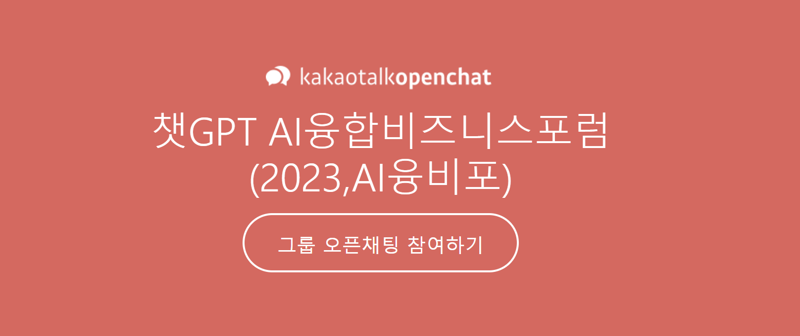

AI 융합전문가 제2기 기초과정
ChatGPT활용 컨설팅 방법론
브랜드 전자책 쓰기
데이터분석 기초와 웹크롤링
이미지/동영상 AI콘텐츠 크리에이터 되기
AI 융합전문가는 시시각각 변화하는 AI의 비즈니스 활용 역량을 향상시키며, 나아가
AI융합 비즈니스포럼
을 통해 학습과 비즈니스를 같이 하며 서로 윈윈할 수 있는, 집단지성 커뮤니티 추구목적의 커리큘럼입니다.
